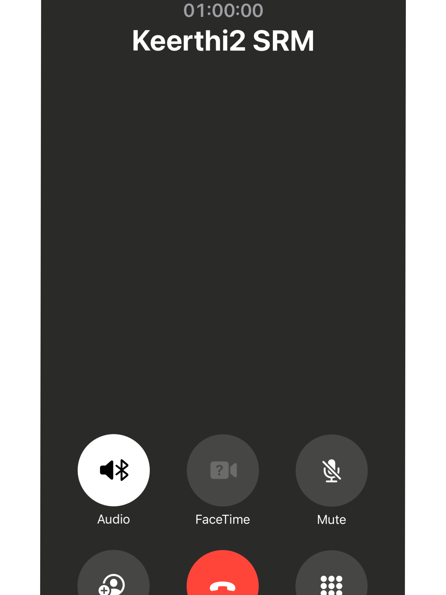

The hints (priority) which i used to get still amazes me!!! ig i have to take birth again to get this lol...

Do you remember this when you used to call my name randomly to say NOTHING and surprisingly you said CUTE this time...

I wont forget these things. When i first (ig you saerted it first) started you baby i meant the actual meaning haha and then after that it transformed into something lovely!!!

And yeah this one.. ig this is the first call we ever made and yeah that's most probably you who called meee!

The one time when i really felt valued by someone that i started to think like i should protect this soul (you) no matter what you should be close by me safe and secure with all the care and love that you deserve!


And hey you know what there in the image in previous slide you said it out loud that you are getting addicted to me and there i was hearing it like it doesn't mean anything so serious and now here i am after experiencing what that really means and when you said future la if you stop talking........... i didn't consider any probability of it and now the lowest probable event that i failed to see happened and the in the left side image that last line sleep beside me (ahhh i literally there was this side of kirthi who just gone deep inside my memories and im feeling difficult to recall....

And here it comes again!...

These lines just melted me and made my overthinking and insecurities to just go vanish. (But they came back again after some time thats a different story).

And yeah same pinch, you are the first for me toooo!

That 11:11 that's a literal coincidence and see the time i spent on instagram 8.5hrs and 7.5hrs na unkitta chat la than irunthirupen!!!


These lines are justt pinned in my heart!! this was the literal turning point if you didnt say this i wouldn't have gathered all my guts to confess to you!

Do you remember this one? You said this when i tried to make you cool abou the previous conversation (like dont be sad for your crush if you didnt confess na how will he know apdinu) and then you didn't want to talk it over in the call and ig you know the rest of it...

That's core me ( I do these teasing and funny comments everytime around my friends or the ones whom i am close ore very comfortable with) and i was starting to feel the comfort spot with you and you said you liked it and the last line there ahhhh i'm flaat for it (if that meant me....)

Worth the shot right!!!!? Yeah it was really worth it (idk if you felt the same but i loved the time we spent together (ahhh no no we don't meet often la so it should be "virtual togetherness"..) and if you ask me now i'm having a void in your space and i can't fill it and no one can) and yeah saying it again it was worth it!!! and FYI i even bunked classes when you used to text me when i was in college to talk to you without disturbance...

This chattttt he literally did the flirting for me and called you anni auhhh i felt it in me i saw a little glimpse of future (now it isn't there but still it was too real back then, thats what i felt, idk about you...)

The first time we ever said those words!!(we confessed before indirectly (august 1) but it is august 12 that we said it out loud) Evening i said something(Do you wanna be my MJ) to you in person and after reaching home you officially said the first words!!!

These things used to be our daily routine ahhh i miss those!!!! but still i never worn out of that habbit my mind's literally reminding me daily at both morning and night to text you and i'm resisting that so that you wont feel uncomfortable... and idk why but my heart still longs for it coz no one used to send those to me daily and i will happily accept it if i get those now...

You remember this? the first time when you said that you made a mistake by confessing to me. The first time i ever got tears in a long time, and even then i said to you take a break dont talk to me atleast for a day, so that you can have some free time without me.. and next day itself you came back and said those words and yet i accepted those. the thing which is haunting me still the most is "I can't be without you" you said this and you broke it, ig you won...

And yeah this was there.. (but you failed to realize i've always been by your side even after this when you've gone mute) and suddenly you said you don't want to hurt me so you are going to leave me. UKW the leaving is the scar of me which isn't gonna go ever and'll rot on me...

Wish that didn't change...

Here you stated the word "our" and then you forgot there are two sides in a relationship and you from one side took the decision that the relationship should't continue and there i was on the other side powerless!!!

Still i don't want to believe you left me for this very petty reason!!!

And this one when Kanagadhara texted me (i was so depressed back then, i do only 1 or 2hrs of sleep i dont eat lunch and it was like this for like a month ig and i lost 5kg then.) and with all those piled up with no one to share i just flushed the most parts i had in me to her and yeah i unsent 2 or 3 messages (could be near to 1000 words) coz i felt i shouldn't be saying those.

Found a project done by someone on internet which is used to anonymous messages to some name and i just put those words there just to load off some weight...

I used to sleep at 5 or 6 in the morning and wake up at 7.30(weekdays) or 10(weekends) and when you asked about this i just didn't have any worrds to say to you...

And here the legendary stalking period begin.. (i realized that was a mistake) found too much felt too much fell too much and yeah i shouldn't have done that but i couldn't stop that because of the obsession I had over you.

This isn't about you but someone who used to be with me. She paid some instagram page to put he message on a reel and sent it to me via a mutual friend. This happend in the 2024 november month end ig and i didn't have anything in me like i'm trying hard to talk to someone and in the same time i am rejecting someone who is trying to talk to me... ig karma played it really well to punish me!! (FYI dont think i left her without any closure, i made everything clear before leaving and even sent messages about we shouldn't be together i've had enough hurt from you so there isn't anything possible again after something like that.) and even after that got a text(from a new account coz i blocked her previous account) during new year a whole paragraph..

This is where we started to barely talk again... BTW tq for those..

How can we not get angry on someone if they don't like TVD huuuuuuuhhhhh!!! but he has some very great taste in movies and his suggestions are just awesome and if i want so see any movies nowadays na i'll go to his letterbox account and search for movies in his movie history!!!

Ig this's about some note which i typed like "I don't get anything i deserve or want"...

This is recent one, theriyama screenshot button press panniten and to my surprise neeyum correct ah appo than text panna. Vera level coincidence la coz i didn't expect any text from you that time and namma pesiyum roba naal aayirukum at that time...
Started this whole book thing to say about the history we shared and this thing is wholely on my perspective of things and i originally ment it to be only containing of the happy ones but it just got a turn in the middle. It wasn't intentional, I just followed a flow and forgot what it is originally inted for, and i just started pouring everything i got in my mind. it just went uncensored to the standards.
Here is the final page. Sorry if i wasted your time but i originally intended this to be birthday surprise with some funny elements in form of history but it didn't go as planned. Anyway i did something... Started to make this website somedays back and today morning continued with this website building work and i suddenly got this idea of "we write the history now and later we will do all the technical works to complete this whole website" and now it's 1:00 am at night time ponathe theriyala full day ithulaye irunthuten... tomorrow CLA exam(the toughest subject) vera iruku enna panna poren nu therla. FYI this is my first experience on building a website like this so forgive me if there was any alignment, formatting errors heheh and i hope you'll enjoy the video which I'll start to edit before 5 mins from your birthday night and i hope you'll like the video and the website too!!!